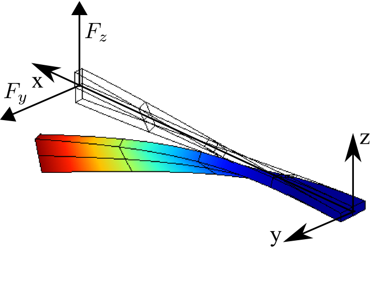
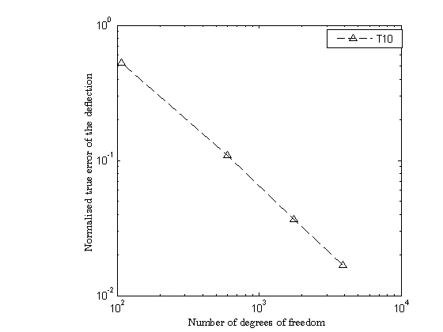
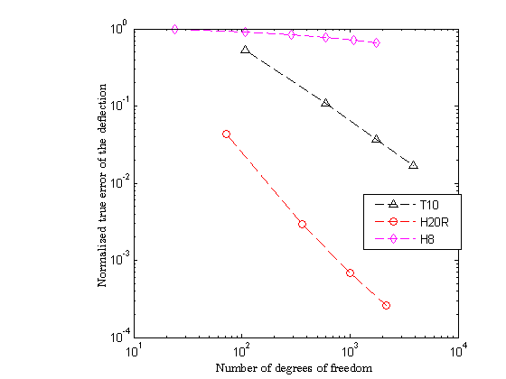
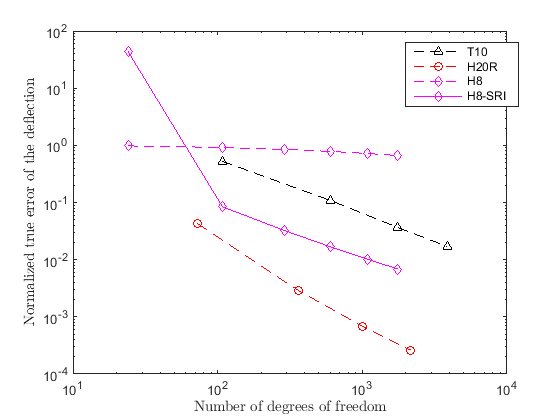

Twisted beam benchmark
Contents
Link to the m-file.
Description
The initially twisted cantilever beam is one of the standard test problems for verifying finite element accuracy [1]. The beam is clamped at one end and loaded either with unit in-plane or unit out-of-plane force at the other. The centroidal axis of the beam is straight at the undeformed configuration, while its cross-sections are twisted about the centroidal axis from 0 at the clamped end to pi/2 at the free end. As discussed by Zupan and Saje the geometry is created by linearly varying the twist angle (rotation of the cross-section), which results in curvilinear edges of the undeformed beam.
The twisted beam is discretized with solid elements. Different kinds of elements are employed in order to illustrate the relative accuracy.
|  |
| Figure 1. Definition of the geometry of the thick elliptical plate |
References:
- Macneal RH, Harder RL (1985) A proposed standard set of problems to test finite element accuracy. Finite Elements in Analysis and Design 1: 3-20.
- Zupan D, Saje M (2004) On "A proposed standard set of problems to test finite element accuracy": the twisted beam. Finite Elements in Analysis and Design 40: 1445-1451.
Solution
function pub_Twisted_beam
The material parameters and dimensions are in consistent units.
E=0.29e8;% Young's modulus nu=0.22;% Poisson's ratio W=1.1;% width of the cross-section L=12;% length of the beam t= 0.32;% thickness of the cross-section tolerance =0.001*t;% geometrical tolerance
The beam is loaded with unit force at the free cross-section. Therefore the traction component is 1.0 divided by the cross-sectional area.
p= 1/W/t;%
For the load in the the Z direction Macneal and Harder list the deflection in the direction of the load of 5.424e-3 units. The deflection used here was determined by running a series of simulations and extrapolating to the limit.
load{3}.traction=[0;0;p];
load{3}.utipex=0.005424534868469;
For the load in the the Y direction Macneal and Harder list the deflection in the direction of the load of 1.754e-3 units. The deflection used here was determined by running a series of simulations and extrapolating to the limit.
load{2}.traction=[0;p;0];
load{2}.utipex=0.001753248285256;
The usual 3-D material property and triaxial material object:
prop=property_deformation_linear_iso(struct('E',E,'nu',nu)); mater = material_deformation_linear_triax (struct('property',prop ));
The coarsest mesh will have two elements lengthwise and one element across the width and across the thickness.
nl=2; nt=1; nw=1;% number of elements employed
For each combination of element type and load direction and mesh refinement we will execute the simulation using this function.
function [utip,nfreedofs] = simulate(... mf, ...% mesh function handle femmf, ...% finite element model machine function handle surface_integration_rule,...% rule to integrate the traction loads load_dir,...% load direction (2 or 3) ref...% refinement factor (>=1) ) % Create the mesh and initialize the geometry. [fens,fes]= mf(L,W,t, nl*ref,nw*ref,nt*ref); % Now shape the twisted beam by rotating each cross-section by an % appropriate angle about the axis of the beam. xyz=fens.xyz; for i=1:count (fens) a=xyz(i,1)/L*(pi/2); y=xyz(i,2)-(W/2); z=xyz(i,3)-(t/2); xyz(i,:)=[xyz(i,1),y*cos(a)-z*sin(a),y*sin(a)+z*cos(a)]; end fens.xyz=xyz; % Compose the model data clear model_data model_data.fens =fens; clear region region.fes= fes; region.femm= femmf(fes); model_data.region{1} =region; % The clamped end: all displacements fixed. clear essential essential.component= [1,2,3]; essential.fixed_value= 0; essential.node_list = fenode_select (fens,... struct ('box',[0 0 -inf inf -inf inf],'inflate',tolerance)); model_data.boundary_conditions.essential{1} = essential; % The free end cross-section is loaded with the force. clear traction bdry_fes = mesh_boundary(fes, []); bcl = fe_select(fens, bdry_fes, ... struct ('box',[L L -inf inf -inf inf],'inflate',tolerance)); traction.fes =subset(bdry_fes,bcl);; traction.traction= load{load_dir}.traction; traction.integration_rule =surface_integration_rule; model_data.boundary_conditions.traction{1} = traction; % Solve model_data =deformation_linear_statics(model_data); % Collect the displacements of all the nodes at the free end enl=connected_nodes(model_data.boundary_conditions.traction{1}.fes); uv=gather_values (model_data.u,enl); % and the "tip" displacement will be the mean of those % displacements utip= mean(uv(:,load_dir)); nfreedofs =model_data.u.nfreedofs; end
The response to the loads in different directions varies, but in the interest of brevity we will consider only the direction of axis Y.
load_dir=2;
The first element we consider is the quadratic tetrahedron.
description ='T10';% tetrahedron mf =@T10_block; femmf =@(fes)femm_deformation_linear(struct('fes',fes,'material',mater,... 'integration_rule',tet_rule(struct('npts',4)))); surface_integration_rule=tri_rule(struct('npts',3)); ref=1; [utip,nfreedofs] = ... simulate(mf,femmf,surface_integration_rule,load_dir,ref); disp (['%Normalized displacement =' num2str(utip/load{load_dir}.utipex)])
%Normalized displacement =0.47577
The displacement is just 50% of the target value, but the mesh is admittedly very coarse (just two elements along the length).
ref=2; [utip,nfreedofs] = ... simulate(mf,femmf,surface_integration_rule,load_dir,ref); disp (['%Normalized displacement =' num2str(utip/load{load_dir}.utipex)])
%Normalized displacement =0.89115
In order to appreciate the convergence of this model we will execute the simulation in a loop and plot the results.
for ref=1:4 [utip(ref),nfreedofs(ref)] = ... simulate(mf,femmf,surface_integration_rule,load_dir,ref); end
The normalized true error is plotted on a log log scale:
loglog(nfreedofs,abs(utip-load{load_dir}.utipex)/load{load_dir}.utipex,...
'k^--');
add_to_legend(description);
labels( 'Number of degrees of freedom', ...
'Normalized true error of the deflection');
 How will a different element compare with the quadratic tetrahedron? Here is the 20-node serendipity hexahedron:
description ='H20R'; mf =@H20_block; femmf =@(fes)femm_deformation_linear(struct('fes',fes, 'material',mater,... 'integration_rule',gauss_rule(struct('dim',3, 'order',2)))); surface_integration_rule=gauss_rule(struct('dim',2, 'order',2)); for ref=1:4 [utip(ref),nfreedofs(ref)] = ... simulate(mf,femmf,surface_integration_rule,load_dir,ref); end hold on loglog(nfreedofs,abs(utip-load{load_dir}.utipex)/load{load_dir}.utipex,... 'ro--'); add_to_legend(description);

For comparison we show the performance of the basic isoparametric eight node hexahedron.
description ='H8'; mf =@H8_block; femmf =@(fes)femm_deformation_linear(struct('fes',fes, 'material',mater,... 'integration_rule',gauss_rule(struct('dim',3, 'order',2)))); surface_integration_rule=gauss_rule(struct('dim',2, 'order',2)); for ref=1:6 [utip(ref),nfreedofs(ref)] = ... simulate(mf,femmf,surface_integration_rule,load_dir,ref); end hold on loglog(nfreedofs,abs(utip-load{load_dir}.utipex)/load{load_dir}.utipex,... 'md--'); add_to_legend(description);
It is rather a sorry sight, the bending accuracy of the H8 hexahedron is dismal. It may be improved markedly using yet again the device of selective reduced integration. This time the shear response is going to be under-integrated.
description ='H8-SRI'; mf =@H8_block; femmf =@(fes)femm_deformation_linear_sri(struct('fes',fes, 'material',mater,... 'integration_rule_volumetric',gauss_rule(struct('dim',3, 'order',2)),... 'integration_rule_deviatoric',gauss_rule(struct('dim',3, 'order',1)))); surface_integration_rule=gauss_rule(struct('dim',2, 'order',2)); for ref=1:6 [utip(ref),nfreedofs(ref)] = ... simulate(mf,femmf,surface_integration_rule,load_dir,ref); end hold on loglog(nfreedofs,abs(utip-load{load_dir}.utipex)/load{load_dir}.utipex,... 'md-'); add_to_legend(description);
end